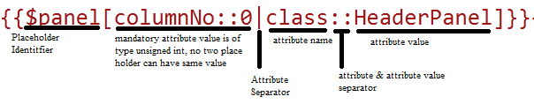
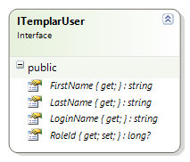
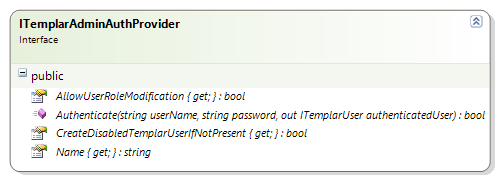

The purpose of this document is to:
If you have comments /queries about this documentation, email them to:
1. Table of Contents
2. Reduced number of framework assemblies to ease deployment
3. New database mode support for Themes
4. New improved file manager
5. Site level resources
6. External JavaScript support
7. Enhanced versioning features
8. Web Performance Optimization
9. Enhanced Site Templates
10. Composite Widget & Enhanced Content Placeholder Widget
11. Basic collaboration support
12. Sync site from site or template locally or over the web
13. Global resources allow separate download\upload of content
14. Support for widget client event mapping
15. Framework support for distributed caching & UI for cache management
16. Improved testability and standardized site data access
17. Page designer enhancements
18. Templar Context now available in - aspx and ashx page created in Templar
19. Support for new Handlers to perform pre-post actions
20. Templar deployment service
21. Miscellaneous Templar Admin UI usability enhancements
22. Support for Custom Layouts
23. Custom Authentication Provider Integration
24. Templar Default Application Configuration
Templar now has only 5 required assemblies apart from third party assemblies namely
For Widget Development:
Tavisca.Templar.Contract.dll, Tavisca.Frameworks.Spectrum.dll, Tavisca.Templar.Extensions.dll
Templar Framework:
Tavisca.Templar.dll, Tavisca.Templar.EmbeddedResourcePathProvider.dll.
Going forward upgrading for new features and fixes will become very easy.
There is no more a need for pushing theme content to every deployment machine. With this feature you can store themes in a database instead of the file system with full separation between design and live mode, which will be single point of deployment for multi-server deployment scenarios. Migrating from File System Mode to Database Mode is also very easy.
Note: Database mode doesn’t work in backward compatibility mode. So you can’t work with file system mode side by side with database mode.
Database Theme support requires Distributed Cache Solution e.g. AppFabric caching for performance reasons.
New improved web based file manager for viewing theme content, Web File Manager works similar to file manager on your computer. Supports manipulations with existing files/folders can be done through the context menu or even with shortcuts. New File manager supports listing of files & folder, editing of text content based files, preview of files, creating zip files, uploading & downloading of files, easy moving or copying of files across folders.
Note: File editing is being disabled in case of Backward Compatibility mode i.e. when Themes are store on the file system.
Site level content can now be stored & accessed depending upon the access control. Content that varies with site such as xml configuration files, documents like FAQ’s, Privacy policy etc… can now be stored with the site.
In Templar v1.7 you can add external JavaScript both Site & Page Level; every page level JavaScript takes precedence over site level. You can arrange order for JavaScript. Default JQuery can be overridden from external path, but order for jQuery & Key Name can’t be changed. It has to be the first one. If jQuery Path is empty Templar Framework will insert its own jQuery.
Site-Resources can also be added as scripts.
Templar v1.7 now comes with entire Site Versioning, Page versioning, Global Culture & Global Theme Versioning support. Using previous version data you can see difference between current data using diff manager and can even update the data.
Templar now has a better way of CSS combining & compression. Also for performance reasons Templar now adds Cache Header for all dynamic resources that it serves. To enable optimization change value of key Templar.EnableWebOptimization in AppSetting to “Y”, to disable it change value to “N”, by default it is “Y”.
When Themes are Database & CSS files are modified from UI File manager in order to reflect changes, you are recommended to clear WebOptimizationCache to force to re-bundling of CSS.
Site Templates are now enhanced and include site level culture, resources and themes. Entire Site can now be re-created just using the template without any dependency.
Note: Global cultures and themes are not part of the site template and have to be moved independently if used. Site template refers them by their name.
Introduction of Composite widget allows placing other widgets inside it, which helps in creating complex layouts & placing widget side by side in same panels. Content Placeholder widget has been improved to have tied relation with child widgets contained in it. So when it is dragged or dropped to another location all children are also moved with it.
Notifications on page listing and designer appear whenever the same page is accessed and modified by some other user simultaneously.
Support for page level chat on designer to send simple message.
Sites can now be updated from template or any other site on same deployment or remote deployment over the web provided the user has required access.
We now allow global Themes and Globalization data to be downloaded separately. This can be used to update corresponding data on a different Templar deployment.
Framework now support JavaScript event mapping along with legacy way of broadcasting of JavaScript event.
Support for Distributed Cache has been added. UI cache management includes separate site specific cache with ability to view content corresponding to entries; remove individual entries or clear entire site specific cache without affecting other site caches.
Added TemplarContext as a standard way of accessing Environment Data, Session, Culture Resources, Culture list and SEO parameters(Header,footer & metadata).
Enhanced testability for services and widgets with ability to create mock TemplarContext.
We now allow Templar settings to be accesses in aspx and ashx pages also.
Multiple handlers can now be added at site level to perform pre & post actions in execution life cycle of page, something similar to modules.
E.g. Logging ambient data whenever required.
Allows site\pages\templates\global culture\global theme - download, update via a service can be used to create deployment automation infrastructure
Templar now supports new type of layout called “Custom Layout” along with existing 5 legacy layouts. In case of custom layout you can design and integrate any HTML markup with placeholders as your new layout.
Custom Layout allows defining complete HMTL markup along with placeholders for Widgets & substitution of Templar variables. Custom Layout can be dynamically or statically set by Pre-execute handler by setting markup string or Site Resource Key in page setting named ‘PageLayout’. Set Page Setting Key PageLayout’s value to ‘SiteResourceUrl(
E.g. SiteResourceUrl(HomePageLayout).
If key is missing or value is empty then layout is picked from applied theme. It means Theme should have folder named ‘Layouts’ which will hold HTML layout for individual Templar pages & Site Level default layout.
Custom Layouts can be defined at 3 levels.
Layout of page is always picked in reverse order of hierarchy.
Consider following Scenario
Site with URL: A Theme: B
Master Page with relative URL: /pages/masterpages/master
Content Page with relative URL: /pages/contentpages/login
Normal Page with relative URL: /home
Normal Page is accessed.
When home page is accessed then framework looks for layout file at location. ”/Uploads/A/Themes/B/Layouts/home.html”.
If the file is missing, then framework looks for site default page layout.
“/Uploads/A/Themes/B/Layouts/ DefaultLayout.html”.
If this file is also missing framework doesn’t render page properly & exception is logged in background.
Content Page is accessed
When login page is accessed then framework looks for layout file at location.
”/Uploads/A/Themes/B/Layouts/pages/contentpages/login.html”.
If the file is missing, then framework looks for master page layout. ”/Uploads/A/Themes/B/Layouts/pages/masterpages/master.html”.
If the file is missing, then framework looks for site default page layout. “/Uploads/A/Themes/B/Layouts/ DefaultLayout.html”.
If this file is also missing framework doesn’t render page properly & exception is logged in background.
Layout Markup Substitution
Defining Placeholders for Widget - {{$panel[columnNo::0|attribute::attributeValue|...]}}

Resolving Templar Page Url - [$TemplarUrl(~.
Adding Images/Css/other files in them - [$ThemeUrl (<filepath w.r.t. theme>)$].
Adding Site Resource Url’s - [$SiteResourceUrl (.
Adding Site Setting Value – [$SiteSettings(.
Adding Page Setting Value – [$PageSetting(.
Adding Globalization Resource Value – [#<GlobalizationResourceKey>#].
Sample Layout HTML File
<!DOCTYPE html PUBLIC "-//W3C//DTD XHTML 1.0 Strict//EN" "http://www.w3.org/TR/xhtml1/DTD/xhtml1-strict.dtd">
<html xmlns="http://www.w3.org/1999/xhtml">
<head>
<title>Travel - Home</title>
<meta http-equiv="Content-Type" content="text/html; charset=windows-1251">
</head>
<body>
<div class="bodyCss">
<div id="header">
<a href="index.html" class="logo">
<img src="[$ThemeUrl(images/logo.jpg)$]" alt="" height="90" width="274">
</a>
<ul id="menu">
<li><a href="[$TemplarUrl(~/home)$]">Home Page</a></li>
<li><a href="[$TemplarUrl(~/travelabout)$]">About Company</a></li>
</ul>
</div>
{{$panel[columnNo::0|id::contentPanel]}}
{{$panel[columnNo::1|id::footer]}}
</div>
</body>
</html>
Static html as put in a layout can be served as-is without any markup changes on Templar Page’s url. Custom Layouts set by pre-execute handler or from site resource or from Theme can directly serve as HTML page to browser by setting key named “OnlyRenderPageLayout” in PageSetting to “Y”
In this case apart from Placeholder substitution, all other substitution takes place, and final string content is sent back to browser.
Default behavior of Templar is to add all default scripts to the page. In case default scripts are not required set “DisableDefaultScripts” in PageSetting to “Y”. Default value is “N”
Templar now supports integrating custom authentication provider. This feature enables plugging in third party authentication providers like Active Directory or custom authentication service for controlling access to Templar admin application.
To implement Custom Authentication Provider you need to implement following interfaces

Member Description
While he/she is logging in to Templar. For ex: If LDAP (Lightweight Directory Access Protocol) is used as an Authentication method, there can be cases where users’ groups are changed. And in such case, it is desired that the Role also gets changed accordingly in Templar too. Hence, using this property cases like these can be handled.

Member Description
Key Name | Purpose
--------------------------------------------------------------------------------------------------------------
Templar.IsFirstUse | Use to setup new development environment(Database)
Default : ”Y”
Templar.Cache.CacheName | Name of the Templar Main Cache
Default: “TemplarCache”
Templar.Cache.TemplarDesignCacheName | Name of the Templar Design Cache
Default: “TemplarDesignCache”
Templar.Cache.TemplarLiveCacheName | Name of the Templar Live Cache
Default: “TemplarLiveCache”
Templar.Cache.Provider | Name of class inheriting from abstract class
System.Runtime.Caching.ObjectCache.
Few Implementation are provided in Tavisca.Templar.Extensions
1. Wrapper around Dictionary
Tavisca.Templar.Caching.InMemoryCacheImpl
2. Wrapper around HttpCache
Tavisca.Templar.Caching.HttpRuntimeCacheImpl
3. Wrapper for AffFabric
Tavisca.Templar.Caching.AppFabricCacheImpl
Default: Tavisca.Templar.Caching.HttpRuntimeCacheImpl
Templar.Cache.EnableCacheMetaUpdate | Enable Cache Metadata update
Default : “Y”
Templar.Cache.EnableAsyncCacheMetaUpdate| Cache access stats are updated asynchronously when value is Y else
synchronous updation takes place
Default : “Y”
Templar.EnablePortBasedSSLDetection | Templar allow port based SSL detection when this key has value “Y”
else portbased detection is disabled.
Default : “N”
Templar.SecurePorts | When port based SSL detection is enabled this key holds the comma
separated port numbers on which secured page has to be served.
Default : “443”
Templar.SaveViewStateInSession | Decreases size of page by storing viewstate in session when value
is “Y”, else viewstate is persisted on page in Hidden Field
Default: “Y”
Templar.AllowThumbnailsInFileManager | Show thumbnails in FileManager
Default : “N”
Templar.AllowThemeEdit | Allow editing of css & text based resources in themes
Default : ”N”
Templar.FileSystem | Theme Storage support is decided by this value,
Theme can be stored either on WindowsFileSystem or in Database
[WindowsFileSystem | DatabaseFileSystem]
Default : “WindowsFileSystem”
Templar.EnableWebOptimization | Combining CSS for Preview & Live view from Themes
Default : “Y”
Templar.ContentPlaceHolderWidgetName | Name of ContentPlaceHolder Widget
Default : “ContentPlaceHolder”
Templar.CompositeWidgetName | Name of Composite Widget
Default : “CompositeWidget”
Templar.ExcludeRoutes | File Extensions to be excluded from routing & let ASP.NET handle it
Default: “htm|html|aspx|gif|jpg|png|axd|ico|svc|ashx|xml|txt|css|swf|js|php”
Templar.SuppressJavascriptErrors | Suppress JavaScript errors on Client Side & log it as Exception in
Application Errors
Default : “N”
Templar.EnableFeedback | Show feedback window in Admin Panel
Default : “Y”
Templar.RestrictedSiteUrls | Names that are restricted for siteurl
Default : “templar|resources”
Templar.EnableLogging | Log Key not found exception if not found in Globalization Culture
Default: “N”
Templar.RestrictedPageUrls | Names that are restricted for pageurl
Default : “design|preview|live|templar|services|handlers|templaradmin|defaultlayout”
Templar.ShowMachineName | On Live & Preview page bydefault machine name is visisble to
locate response origin machine, if value is Y this information is available
as tooltip at top left corner of browser
Default: “N”
Templar.EnablePageScheduling | Enable page scheduling feature
Default : “N”
Templar.PageSchedulerPollingInterval | Page Scheduler Polling Interval in Minutes
Default : “5”
Templar.ShowSendEmailOption | Show mail sending option in Admin UI
Default : “Y”
Templar.EnableCaching | On demand Caching of Site & Page Entities (i.e. Configurations)
Default: “Y”
Templar.ApplicationVersion | This key suffix as querystring to all javascript url & css when
included by framework, it is useful for for forcing static content
update on client by changing its value.
Templar.TemplarContextLocatorService | Name of class implementing interface ITemplarContextLocatorService
Value can be overridden to create MockContext for Testing Widgets locally
Templar.EnableAuditLogging | Enable/disable Templar audit logging feature
Templar.EnableAuditLogging | This key is used for decrypts the encrypted email info.
Templar.EnableAuditLogging | This is used for decrypts the encrypted email info.
Value is encrypted email-info.
Key Name | Purpose
----------------------------------------------------------------------------------------------------------
DisableDefaultScripts | Use to exclude default scripts being added to page.
Default : ”N”